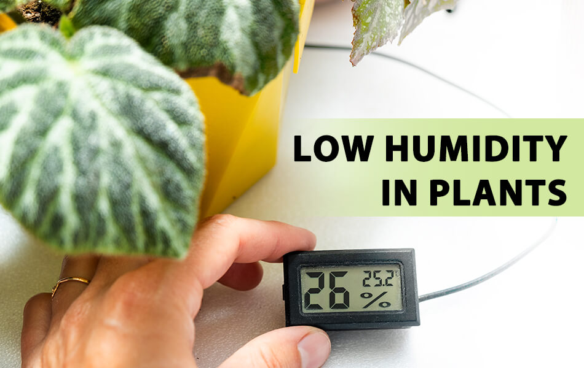

Plant Humidity Guidelines

Indoor Plants
- Understand Ideal Humidity: Different indoor plants have varying humidity requirements. Research the specific needs of your plants, whether they prefer high, moderate, or low humidity.
- Grouping Plants: Grouping plants with similar humidity preferences together can help create a more favorable microclimate for them.
- Use Humidity Trays: Place plants on trays filled with water and pebbles to increase humidity around them, especially during dry periods.
- Misting: Mist the leaves of plants that prefer higher humidity. Be cautious not to over-mist, as some plants are sensitive to water on their foliage.
Outdoor Plants
- Research Plant Humidity Tolerance: Just like with indoor plants, understand the humidity preferences of your outdoor plants. Some may thrive in dry conditions, while others prefer more moisture.
- Watering Practices: Adjust your watering routine based on the humidity levels in your region. During dry periods, water more frequently to provide necessary moisture.
- Mulching: Apply mulch around outdoor plants to help retain soil moisture and moderate humidity levels.
- Shade: Consider providing shade for plants that are sensitive to high levels of direct sunlight and low humidity.